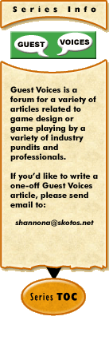

|
Guest Voices #1: Recruiting for Volunteer Gamesby Todd Nilson Todd Nilson is the lead for our upcoming Skotos game, Lovecraft Country: Arkham by Night. He's also a professional recruiter. Our first Guest Voices article thus covers his particular expertise: recruiting, in this case for volunteer-based games. Recruiting for any industry has its challenges, and some are more demanding than others. While recruiting for a volunteer, virtual organization is not the most difficult, it poses some significant challenges for Skotos that I'll be addressing in today's entry, along with some methods for dealing with those challenges. Before we get started, though, I'm going to cop to not being the ideal example of these practices. I've made plenty of mistakes and I plan to share'em! Recruiting as a Consistent Process Note the word foolish. Though as gamers, many of us fancy ourselves artists of one sort or another, who loathe to be constrained by the grind of the mundane, I've found through hard experience that having a thorough, consistent and easily repeatable version for the way that I find and employ people takes a lot of stress and worry away. There's nothing foolish about an effective and pragmatic consistency where you are ready with a couple of clicks with documents like:
Having to scramble for or recreate these documents on the fly causes you stress and your applicants annoyance. If you like to personalize your letters, that's fine, even better. But having a template to work from can help your efforts immeasurably. Let me further emphasize that not having to scramble for these documents means keeping them stored in some consistent place, either on your hard drive, on the TWiki site, or--just to be safe and paranoid--maybe both. At present, I use a Microsoft Word document with form fields for my applicants. This has proven somewhat less than ideal because a few of my applicants don't have MS Word (and have never heard of OpenOffice) or else haven't the faintest idea how to fill out form fields in such a document. While I might be able to rationalize with myself that this is a sort of IQ test, that's not really fair when I'm trying to get a limited pool of applicants. If I was recruiting for Coca-Cola with massive numbers of people applying, I'd feel a bit better about it. Ideally, I would like to move to a web form that will appear directly on Lovecraft Country. Most people can figure out how to use them, and I might then be able to manage all of my applicants through a database rather than a large collection of Word documents. Of course, just as you want to have your application materials in one easily located spot, you want to store all of your applications in one place, too. Presently, I keep them both on my hard disk drive, which is backed up quarterly to CD's and on the private TWiki pages for the leads. Process consistency isn't just about document management, but the rest of your practices, too. Have a plan for how many staffers need to agree that a candidate looks good before he or she is brought aboard, what sorts of checks need to be completed and how that person is brought aboard and oriented. And stick with that process. Not only will you be less stressed, but in the world of corporate America, you're also less open to lawsuits. Who do we really want to hire? Before you go on the hunt for new staff members, you should sit down with your leads (or yourself, if you're currently going it alone--yes, go ahead and buy yourself a cup of hot joe) and decide what your job description should look like. Ask yourself some of these questions:
At the same time, however, don't forget that you are trying to entice someone to come and give their valuable time to your game. So when you write a description for a staff opening, remember to:
As I read this, I realize that I've fallen down on this job a bit. I recently posted a staff opening on the Lovecraft Country web site for a graphic designer. While I did a tolerable enough job describing the position, I think that I could have made it sizzle a little more and also spelled out the process for prospective applicants. (Note to self: Revise this). Finally, since we cannot pay our staffers a regular wage for their work, we need to make sure that all jobs clearly state that these are uncompensated (in conventional terms at least) volunteer jobs. Finding The Right Talent Now that we've got a decent job description, a plan for recruiting and the documents and processes to back it up, we're on the hunt! Most of the Skotos teams that look for volunteers tend to go to the Forums on Skotos first. This is a perfectly natural place to start a search, but it shouldn't be the end of the line. As in the business world, you would not want to ignore the Monster.com job boards, because they are the nine-hundred pound gorilla sitting in the corner that you would be imperiled to ignore. I would hazard a guess that 99% of all current as well as former Skotos customers frequent the Skotos boards. These are your primary targets for staff members because they are already, chances are, familiar with the Skotos game engine. It's time to do some thinking about your game. Are there other discussion lists across the web that would be interested in your game? With Lovecraft Country, we have been blessed with a huge fan base of both fans of the author and tabletop RPG lovers. We have advertised in such places as Yog-Sothoth.com and a myriad of small discussion lists across the web. But why should you stop there? The most effective recruiters are always recruiting, and I don't mean that in an obnoxious used-car salesman sort of way. When I go to the supermarket and see someone wearing a Miskatonic U t-shirt, you can bet I'm talking to him or her in a minute. I also work closely with universities and technical colleges in the area, letting them know that I am looking for interns. Most college placement officers aren't particularly concerned about whether you can pay for the position or not. It's good experience for their students. I focus my efforts on graphic design and game design programs--ITT Tech has a four year game design program that's a great fit for Skotos. So far, I've got contacts with both Indianapolis and Milwaukee career placement officers who regularly look for me for students. Has it panned out yet? No. Might it? Why not? Finally, let me suggest that if you're building a Skotos game on your own and are not actively involved with any of the other online games offered by Skotos, you're doing yourself a disservice. As many employers will tell you, the best interviews involve seeing a candidate in action. If you can get into another game and interact with a new subscriber whose role-playing and communications skills, punctuality, and friendliness impress you, then you've got a lock on some talent that nobody else has managed to tap yet. There's an ongoing discussion in the recruiting world about active vs. passive candidates. Active candidates are those job seekers who approach you for a job, who post their resumes on dozens of job boards and who proactively contact recruiters for help. Passive candidates are those who are not looking for a job, who have not posted their resume and who generally either don't want contact with a recruiter or don't see how it might benefit them. The general sentiment in recruiting circles is that passive candidates are better (I'm skeptical of this, but that's another discussion). Why, you ask? Because a passive candidate is probably happy in his or her current job, has lots of responsibilities and doesn't really have time for nonsense like resume writing. In general, passive candidates are supposed to be "top producers" in an organization. For our purposes, the players you run into and are impressed by in other Skotos games are our passive candidates. They may be leading guilds or very actively engaged in achievement-seeking or social climbing. But they may not yet have any idea that they could be making a bigger contribution to Skotos. Find them. Educate them. If you don't, I certainly will be. One caveat, though, about recruiting passive candidates--and active ones for that matter. While Skotos has thus far not gotten involved in cases of allowing staff members to participate in building activities on multiple games, it may not always be so. And, being such a close-knit community on the staff side, it's extraordinarily important to maintain good relationships with the other teams. The coding of objects and systems on our games benefit each other tremendously, and maintaining a high regard for those who are already on other teams is a matter of courtesy. In other words, it isn't nice to poach other existing staffers. If you fear that you may be pulling a current staff member over to your team, the best thing that you can do is recommend to active candidates that they immediately contact their Lead to discuss their interest in participating on another team. Approaching passive candidates who are staff for another game should strictly be a no-no except under the most extenuating circumstances. Okay, we've got candidates, now what? It's not really a surprising concept that we ought to try new staff members on board quickly. But I've found over the past few years that it's a real challenge to find a balance between speed and undue haste. Before we had a process in place (and, believe me, our process is a work in progress!), I made several unduly hasty staff appointments that resulted in a couple of either annoying or uncomfortable situations. Some of those whom I eagerly brought aboard--I had visions of achieving critical mass of a staff of about 20-30 people in a few weeks (silly boy)--punked out on me within a month. They either didn't have the time, or their enthusiasm was blunted by the fact that we had insufficient orientation and training materials and personnel to get them going. Others were simply personality problems, or they didn't get on with the rest of the team. When you receive your application requests, you should clearly articulate a few things. First of all, thank them enthusiastically for their interest! These are people who are willing to work for free because they think your project sounds exciting. Isn't that all manner of cool? Second, let them know about follow up steps. You should try to answer some of these very natural questions:
So what exactly is the next step? It might sound stodgy, but it ought to be a personal interview. The application is only going to tell you so much and you really ought to spend some time chatting over IM or in one of the Skotos game settings (preferably yours) to get a feel for your candidate's communication style. Your questions should follow up on comments from the application and you should also honestly articulate any problems or challenges that you see with bringing this individual aboard. I usually like to use a few behavioral interview questions in these interviews. A behavioral interview question usually starts with something like "Tell me about a time when..." The object of such a question is to get your candidate to articulate a specific past experience similar to a job duty or situation you fully expect him or her to encounter while working for you. Some example questions:
In these questions, you are looking for specifics: a who, what, when, where and why. In follow-up questions, you might ask about the end result, what was learned, what he or she would now do differently being older and wiser. Vague responses or answers that use "Always" or "Usually" aren't reliable and you should be suspicious of such generalizations. Human behavior seldom changes, and then only under great pressure or with tremendous effort. These sorts of questions have helped me to identify more than one potential "trouble" candidate. There's lots more on behavioral interviewing--but that's another entry some other time. A final or simultaneous step in this process ought to be some background checking. Background checking you say? Is this a government clearance job? We can't exactly call work references for the sort of work we do at Skotos, but we can check to see how our applicants play with others in other games. Have assists ever been filed against this person in other games? Did it result in disciplinary action? Is this person supposed to stay away from another customer because of some uncomfortable or unpleasant in-character or out-of-character situation? Believe me, having the scoop on whether a new recruit is hated by a current team member can save you months of headaches. Hired! Now what? Finding and hiring the "right" staff members is only half of the proverbial battle. Your recruitment program is only as good as your ability to keep a happy and productive staff through the liberal application of good people management, clear responsibilities and policies, good training and orientation documents and a whole lotta love and patience. That'll be the topic of my next entry. [ #2: The Cost of Insecurity: Griefing, from Anonymity to Accountability —> ] |